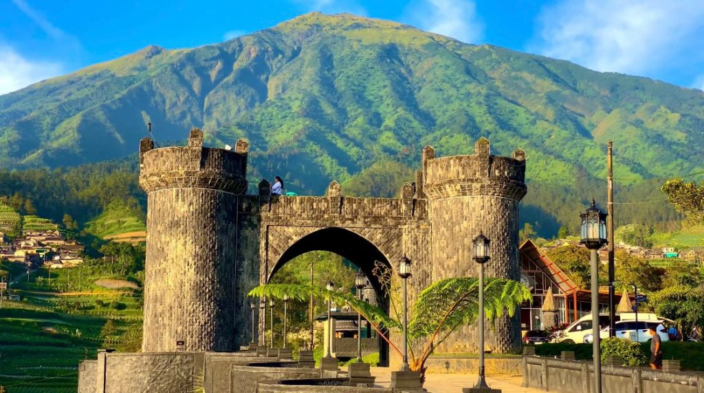

[Daya tarik 1]
1. Pemandangan pegunungan yang indah: Negeri Khayangan menyuguhkan panorama Gunung Merapi dan perbukitan hijau yang memanjakan mata.
Destinasi Pilihan
[Tulis slogan singkat yang menarik.]
Negeri Khayangan merupakan salah satu destinasi wisata alam yang terletak di kawasan Magelang, Jawa Tengah, tepatnya di lereng Gunung Merapi. Tempat wisata ini menawarkan pemandangan alam yang indah dengan latar belakang pegunungan, hamparan perbukitan hijau, serta udara yang sejuk. Negeri Khayangan juga terkenal dengan jalan berkelok dan pemandangan awan yang membuat suasananya terlihat seperti berada di negeri di atas awan. Keindahan alamnya menjadikan tempat ini cocok untuk melepas penat dan menikmati suasana yang tenang.
Negeri Khayangan merupakan salah satu destinasi wisata alam yang terletak di kawasan Magelang, Jawa Tengah, tepatnya di lereng Gunung Merapi. Tempat wisata ini menawarkan pemandangan alam yang indah dengan latar belakang pegunungan, hamparan perbukitan hijau, serta udara yang sejuk. Negeri Khayangan juga terkenal dengan jalan berkelok dan pemandangan awan yang membuat suasananya terlihat seperti berada di negeri di atas awan. Keindahan alamnya menjadikan tempat ini cocok untuk melepas penat dan menikmati suasana yang tenang.

Sumber gambar: https://negerikahyangan.com/
1. Pemandangan pegunungan yang indah: Negeri Khayangan menyuguhkan panorama Gunung Merapi dan perbukitan hijau yang memanjakan mata.
2. Jalan berkelok yang ikonik: Jalan berkelok di kawasan wisata ini menjadi daya tarik tersendiri dan sering digunakan sebagai latar belakang untuk berfoto.
3. Suasana sejuk dan pemandangan awan: Udara pegunungan yang sejuk serta pemandangan awan dan kabut yang menyelimuti perbukitan menciptakan suasana indah seperti berada di negeri di atas awan.